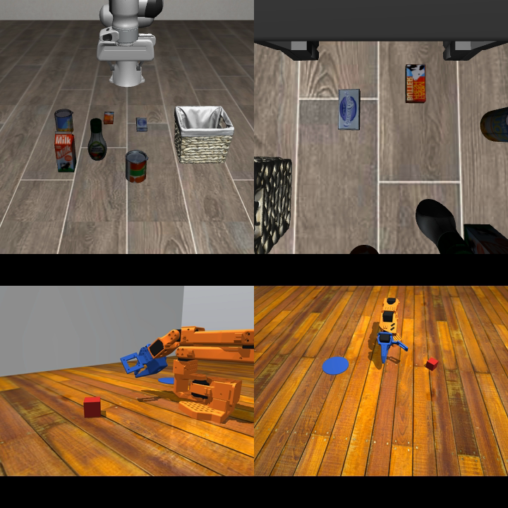

What we did, and why.
The what. MolmoAct2 is an open vision-language-action model from Ai2: a 5B-parameter network that looks at camera images, reads an instruction like "pick up the cube," and outputs robot joint angles. It ships inside LeRobot, Hugging Face's robotics library, and it targets the SO-101, a low-cost open-source robot arm. We put it in a MuJoCo simulator of that arm. Zero-shot, straight out of the box, it did not grasp the cube. So we taught it: a scripted expert played the task 500 times in the sim, and we fine-tuned the model on those demos with LoRA adapters (low-rank adapters, a few small trainable matrices added to the frozen model so you update a tiny fraction of the weights instead of all 5B).
The why. Real-robot data is slow, expensive, and breaks things. We wanted to get everything right in the sim before this model ever touches our real SO-101, and to give other people a way to do the same if they want.
Everything we tried.
| # | Change | What it is | Result |
|---|---|---|---|
| 1 | Photorealism pass | Wood tabletop, matched camera pose and FOV, better lighting. Testing the "it looks too fake" theory. | No change in success. The look wasn't the problem. |
| 2 | More demos | Scripted-expert demos with randomized cube placement, scaled 30 to 300 to 500 episodes, recorded as LeRobot datasets. | Grasp ~10% to 33% as the count climbed. |
| 3 | Wrist camera | Added the arm's own eye-in-hand view alongside the overhead camera. | Bundled into the 300-demo model; not measured on its own. |
| 4 | Noise + retries in demos | Execute with injected wobble, record the clean actions (DART-style), and keep episodes where the expert misses and recovers. | The arm recovers from a missed grab instead of freezing. |
| 5 | Success-state endings | Demos end with the cube placed on the target, so "done" is in the training data. | The model learns to stop once the cube is placed. |
| 6 | Slow release | Open the gripper over ~11 recorded frames instead of one step, so the release is imitable at 33 Hz. | The release stops failing halfway through the drop. |
| 7 | Idle-frame stripping | Drop frames with no motion, to densify the training signal. | Backfired. It deleted the release frames too. Reverted. |
| 8 | Action chunking | Predict 10 actions per query and run the chunk open-loop (execute all 10 before asking again), matching the model's LIBERO setup. | First successes that repeat across cube positions, not one-off flukes. |
| 9 | Binary gripper | Relabel the gripper to two values, open or closed, so the discrete head faces a clean two-class target. | Biggest single win. On its own the best observed model (v6): 93% grasp. |
| 10 | Delta actions | Predict joint-angle deltas (at - at-1) instead of absolute targets. | Fine inside the full stack, but about -16 pts of grasp when isolated (93% to 77%). |
| 11 | Full fine-tune | Retrain all the weights instead of LoRA adapters. | 40% grasp, no real successes. |
| 12 | Longer eval episodes | Give each test run more policy steps instead of cutting it off early. | Reported grasp 53% to 77% with the longer budget. |
The scorecard.
| Model | Recipe | Grasp | Success | Loose |
|---|---|---|---|---|
| zero-shot | No fine-tuning. | 0% | 0 | 0 |
| v1 | Change 2 at 30 demos. | ~10% (noisy) | 0 | 0 |
| v2 | Changes 2-4: 300 demos, wrist camera, noise + retries. | 33% | 0 | 0 |
| v3 | Changes 2-6 and 8: 500 demos, success endings, slow release, chunking. | 17% | 1 | 2 |
| v4 | Changes 2-6 and 8-10: everything, delta actions included. | 70-77% | 16/104 | 23/104 |
| v5 | The shipped data, full fine-tune instead of LoRA. | 40% | 1 (push-in) | 2 |
| v6 | The recipe minus delta actions. The downloadable model. | 93% | 9/30 (30%) | 50% |
| The target LIBERO | A sibling MolmoAct2 checkpoint fine-tuned for LIBERO: a different robot and different tasks. | 98.4% / 100.0% / 98.0% / 96.6% across the four LIBERO suites (Ai2's published MolmoAct2-LIBERO results). | ||
Grasp = cube in the gripper. Success = placed on the target, arm at rest. Loose = cube released within 6 cm of the target, a looser bar than strict success.
Watch it learn.

What we learned.
- On this task, the data mattered more than the graphics. Change 1, prettier renders, did nothing. Change 2, more demos, tripled grasp. A sibling MolmoAct2 checkpoint fine-tuned for LIBERO scores ~98% there, in a sim no more detailed than ours, so the photorealism pass was not the lever here.
- Test changes in isolation. v4 looked like our best model until we removed the delta actions and got v6: about 16 points of grasp back (93% vs 77%). Testing changes only in combination had hidden that delta actions were hurting.
- LoRA beat the full fine-tune at this data scale. At 500 demos, LoRA adapters scored higher than the full fine-tune. The full model's best behavior was shoving the cube, not grasping it.
- Give the model time to finish. Longer eval episodes raised grasp with the same weights (reported 53% to 77%).
Run it yourself.
We open-sourced the simulator setup, the scripted demo collector, the training config, the eval harness, and the shipped model's weights and dataset, so you can run it yourself. One 24 GB GPU runs the whole loop.
- Clone and install. The sim, the collector, and the eval harness are all in it.
- Script your demos. Point the collector at your task. 500 episodes take a few hours on a laptop.
- Fine-tune and score. LoRA fine-tune on a 24 GB GPU; training time varies with the card, a few hours on a modest one. The harness scores every run and saves the videos.
What's next.
- Put it on a real SO-101. A fixed camera rig, so the simulator's camera and the real camera match by construction.
- Score real runs with a VLM judge. In sim we read success straight from the physics. A real bench has none. LeRobot 0.6 ships Robometer, a model that watches the video and scores the run, which would let us score real runs the way we score sim ones.
- Push to 5,000 demos. Demos are nearly free in sim. Find out how far scaling the demos takes this task.
With help from MolmoAct2 (Ai2), LeRobot (Hugging Face), so101-nexus (John Sutor), and irenegracekp/molmoact2-so101, the real-arm MolmoAct2 x SO-101 reference this sim bridge is built against.